Rutas y Validaciones en FastAPI
En el capítulo anterior aprendimos acerca de la creación de modelos en FastAPI utilizando Pydantic. En este capítulo veremos cómo definir rutas y validaciones en FastAPI.
Definición de rutas en FastAPI
En FastAPI se pueden definir rutas utilizando decoradores. Un decorador es una función que toma otra función y extiende su funcionalidad sin modificarla. En FastAPI, los decoradores se utilizan para definir rutas en la API. A continuación se muestra un ejemplo de un Sistema de Inventario para aprender cómo definir una ruta en FastAPI:
El proyecto tendrá la siguiente estructura:
proyecto/
│
├── app/
│ ├── __init__.py
│ ├── main.py
| |── models.py
| |── routes.py
│
├── .gitignore
├── README.md
├── requirements.txtEn el directorio app/ se encuentra el archivo routes.py que contiene la definición de las rutas de la API. Vamos a crear los modelos, las rutas y las validaciones para un Sistema de Inventario. A continuación se muestra el contenido del archivo models:
from pydantic import BaseModel
class Item(BaseModel):
id: int
name: str
description: str
price: float
tax: floatEn el ejemplo anterior se define un modelo llamado Item que hereda de la clase BaseModel de Pydantic. El modelo Item tiene los siguientes campos:
- id: Campo de tipo int que representa el identificador del artículo.
- name: Campo de tipo str que representa el nombre del artículo.
- description: Campo de tipo str que representa la descripción del artículo.
- price: Campo de tipo float que representa el precio del artículo.
- tax: Campo de tipo float que representa el impuesto del artículo.
Creación de las Rutas
En este proyecto tambien crearemos un CRUD para el modelo Item. A continuación se muestra el contenido del archivo routes.py que contiene la definición de las rutas de la API:
from fastapi import APIRouter, HTTPException
from .models import Item
router = APIRouter()
inventory = []
@router.post("/items/")
def create_item(item: Item):
inventory.append(item)
return item
@router.get("/items/")
def read_items():
return inventory
@router.get("/items/{item_id}")
def read_item(item_id: int):
for item in inventory:
if item.id == item_id:
return item
raise HTTPException(status_code=404, detail="Item not found")
@router.put("/items/{item_id}")
def update_item(item_id: int, item: Item):
for i in range(len(inventory)):
if inventory[i].id == item_id:
inventory[i] = item
return item
raise HTTPException(status_code=404, detail="Item not found")
@router.delete("/items/{item_id}")
def delete_item(item_id: int):
for i in range(len(inventory)):
if inventory[i].id == item_id:
item = inventory.pop(i)
return item
raise HTTPException(status_code=404, detail="Item not found")En el ejemplo anterior se definen las siguientes rutas:
- POST /items/: Ruta para crear un nuevo artículo en el inventario.
- GET /items/: Ruta para obtener todos los artículos del inventario.
- GET /items/{item_id}: Ruta para obtener un artículo específico del inventario.
- PUT /items/{item_id}: Ruta para actualizar un artículo específico del inventario.
- DELETE /items/{item_id}: Ruta para eliminar un artículo específico del inventario.
Uso de las Rutas en FastAPI
Para utilizar las rutas definidas en FastAPI, se deben importar las rutas en el archivo principal de la aplicación. A continuación se muestra un ejemplo de cómo importar las rutas en el archivo main.py:
from fastapi import FastAPI
from .routes import router
app = FastAPI()
app.include_router(router)En el ejemplo anterior se importa el objeto router que contiene las rutas definidas en el archivo routes.py. Luego, se utiliza el método include_router() para incluir las rutas en la aplicación FastAPI.
Probar las Rutas en FastAPI
Para ejecutar la aplicación, se debe utilizar el comando uvicorn en la terminal.
uvicorn app.main:app --reloadPara probar las rutas definidas en FastAPI, se puede utilizar la interfaz de usuario de Swagger que se genera automáticamente al ejecutar la aplicación. Para acceder a la interfaz de usuario de Swagger, se debe abrir un navegador web y visitar la URL http://localhost:8000/docs.
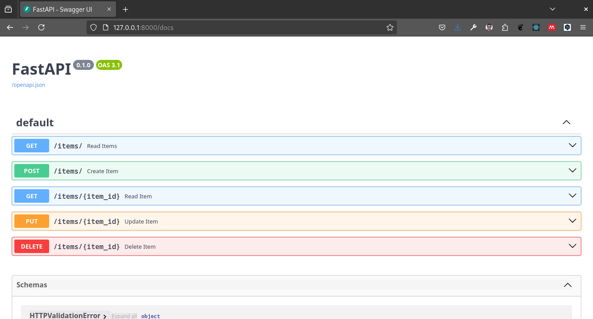
En la interfaz de usuario de Swagger se pueden probar las rutas de la API enviando peticiones HTTP y visualizando las respuestas. Por ejemplo, se puede probar la ruta POST /items/ para crear un nuevo artículo en el inventario enviando un objeto JSON con los datos del artículo.
Ejemplo:
{
"id": 1,
"name": "Laptop",
"description": "Dell Inspiron 15",
"price": 500.0,
"tax": 0.1
}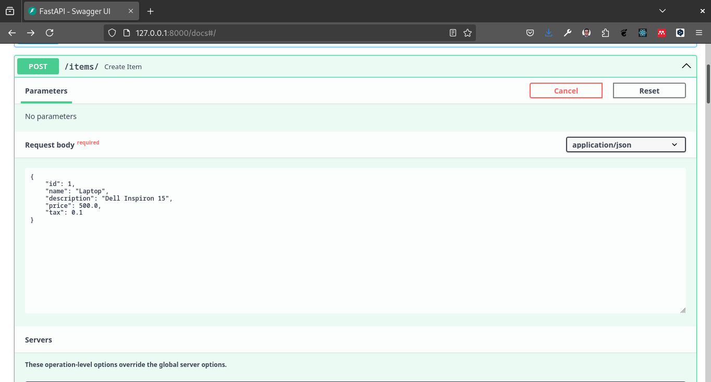
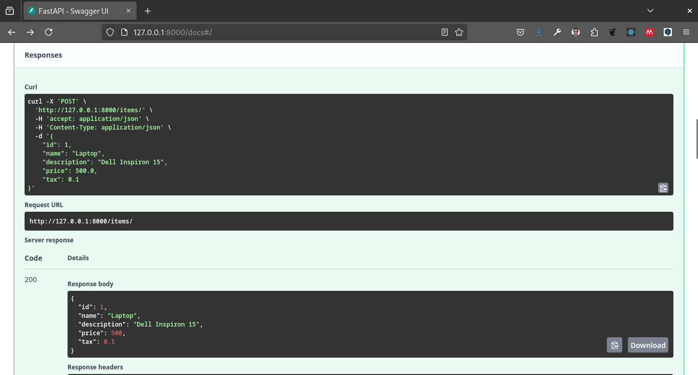
En el ejemplo anterior se envía una petición POST a la ruta /items/ con un objeto JSON que representa un artículo. La API responde con el mismo objeto JSON que se envió en la petición. Tambien podemos probar las demás rutas de la API.
Para probar la ruta GET /items/ se puede enviar una petición GET a la ruta /items/ para obtener todos los artículos del inventario.
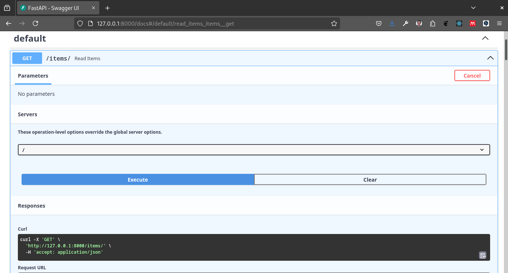
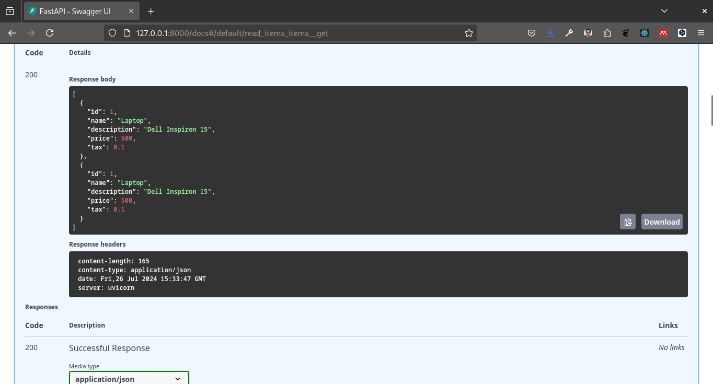
Para probar la ruta GET /items/{item_id} se puede enviar una petición GET a la ruta /items/{item_id} para obtener un artículo específico del inventario.
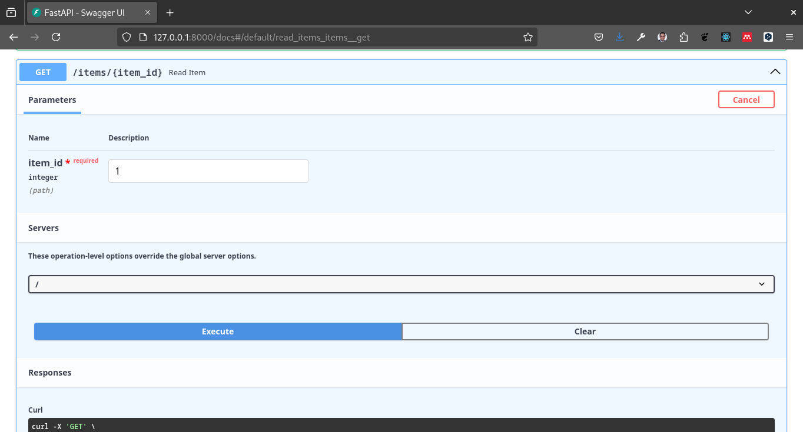
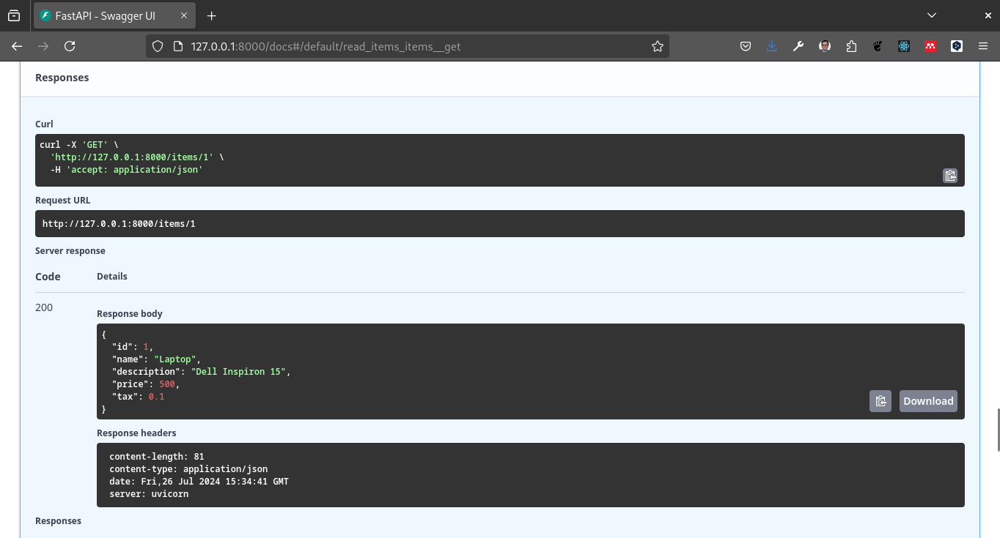
Para probar la ruta PUT /items/{item_id} se puede enviar una petición PUT a la ruta /items/{item_id} con un objeto JSON que representa un artículo para actualizar un artículo específico del inventario.
Actualizaremos body por el siguiente JSON
{
"id": 1,
"name": "Laptop",
"description": "Lenovo Thinkpad",
"price": 350,
"tax": 0.1
}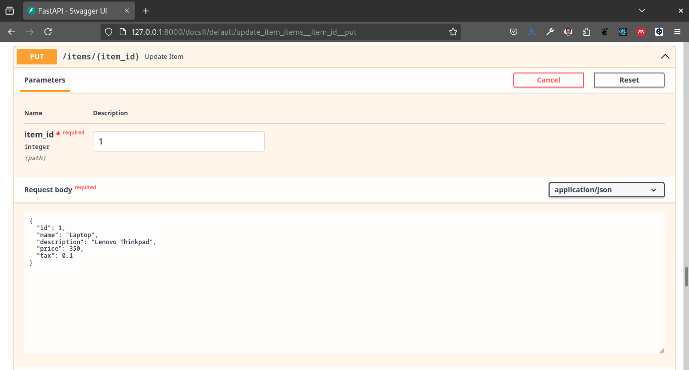
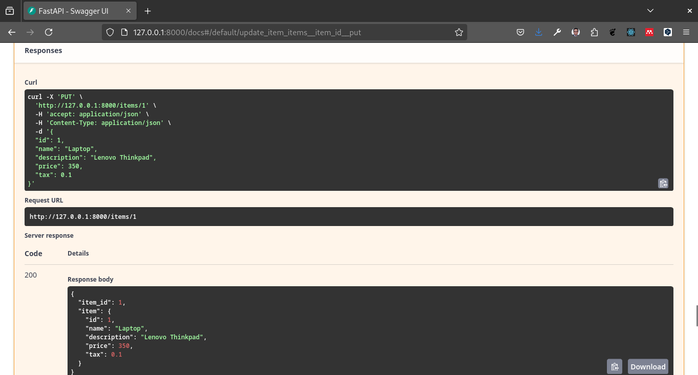
Para probar la ruta DELETE /items/{item_id} se puede enviar una petición DELETE a la ruta /items/{item_id} para eliminar un artículo específico del inventario.
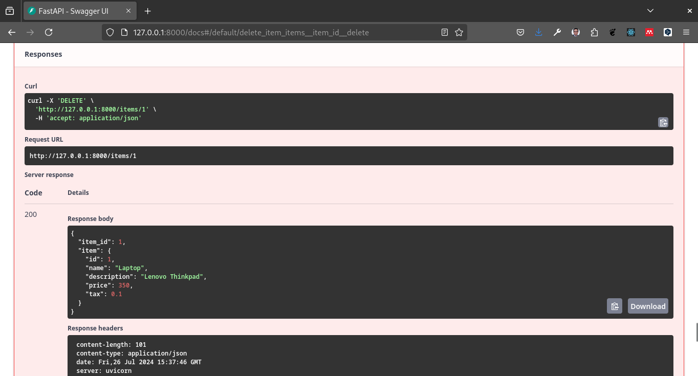
De esta forma se pueden probar las rutas definidas en FastAPI utilizando la interfaz de usuario de Swagger.
Validaciones en FastAPI
En FastAPI se pueden realizar validaciones de datos utilizando los modelos definidos con Pydantic. Los modelos de Pydantic permiten definir tipos de datos, valores por defecto, validaciones y documentación para los campos de un modelo. En el ejemplo anterior se definió un modelo Item con los campos id, name, description, price y tax. A continuación se muestran algunas validaciones que se pueden realizar con Pydantic:
Tipos de datos: Se pueden definir los tipos de datos de los campos de un modelo. Por ejemplo, el campo id es de tipo int y el campo name es de tipo str.
Valores por defecto: Se pueden definir valores por defecto para los campos de un modelo. Por ejemplo, el campo tax tiene un valor por defecto de 0.0.
Validaciones: Se pueden definir validaciones para los campos de un modelo. Por ejemplo, se puede definir una validación para el campo price que requiera que el valor sea mayor que cero.
Documentación: Se puede añadir documentación a los campos de un modelo utilizando la anotación Field de Pydantic. Por ejemplo, se puede añadir una descripción al campo name utilizando la anotación Field.
En el ejemplo anterior se utilizó el modelo Item para validar los datos de los artículos en el inventario. Al enviar una petición a la ruta POST /items/ con un objeto JSON que no cumpla con las validaciones del modelo Item, la API responde con un error indicando que los datos no son válidos.
Por ejemplo si enviarmos un peticion post con el siguiente JSON
{
"id": 1,
"name": "Laptop",
"description": "Dell Inspiron 15",
"tax": 0.1
}La API responderá con un error indicando que el campo price es requerido.
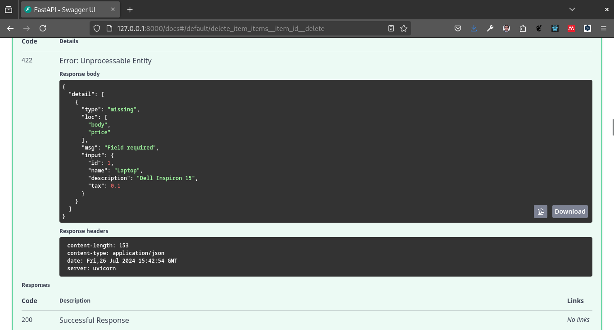
De esta forma se pueden realizar validaciones de datos en FastAPI utilizando los modelos definidos con Pydantic.
En este capítulo aprendimos acerca de cómo definir rutas en FastAPI utilizando decoradores y cómo realizar validaciones de datos utilizando los modelos definidos con Pydantic. En el próximo capítulo veremos cómo realizar API RESTful en FastAPI.